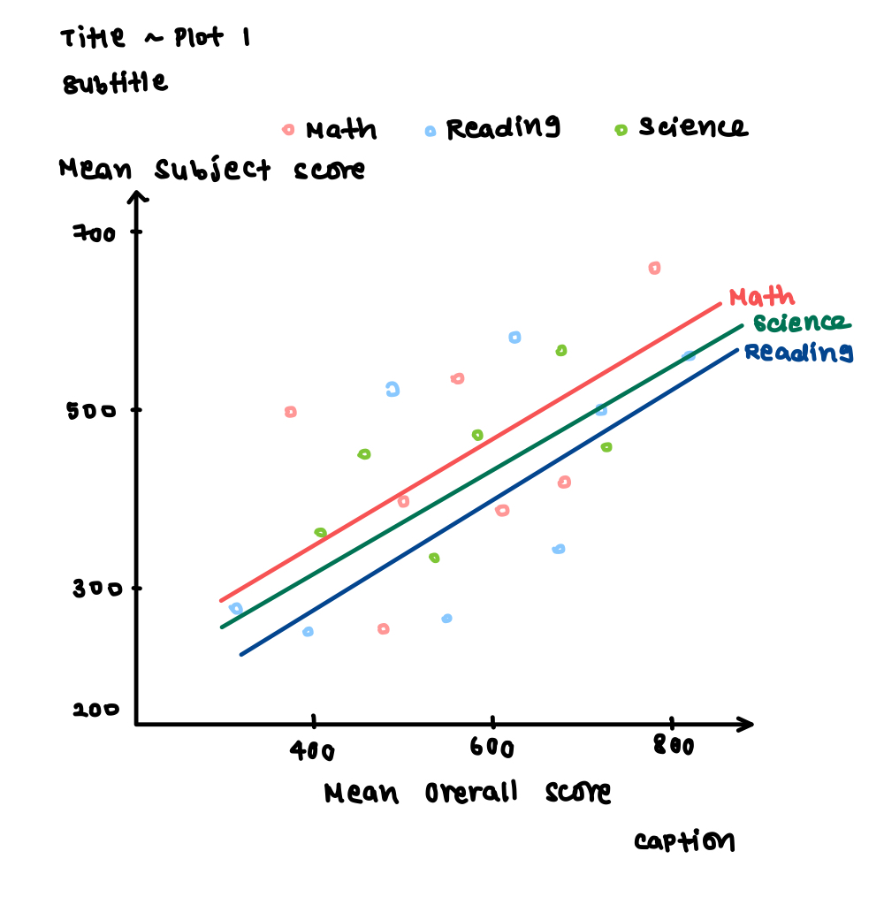

pacman::p_load(haven, tidyverse, ggplot2, dplyr, readr, ggpubr,
scales,forcats, gridExtra, corrplot, Hmisc, lubridate,knitr, kableExtra,patchwork)DataVis Makeover
In this exercise, we aim to apply data visualisation design practices and principles to improve on the visualisations created by peers in Take-Home Exercise 1 .
The original dataset was downloaded from the PISA 2022 Database, titled Student Questionnaire Data File. The file downloaded was cy08msp_stu_qqq.sas7bdat.
1. Preliminary Steps
1.1 Importing Relevant R Packages
1.2 Preparing the Data
As instructed, the original data prepared by the peer should be left unchanged as much as possible unless there is value-add in supplementing the data. The data preparation steps taken by the student will thus be replicated, with adjustments made in later steps as needed.
Code for importing data
stu_qqq <- read_sas("Data/cy08msp_stu_qqq.sas7bdat")
stu_sg <- stu_qqq %>% filter(CNT == "SGP")
write_rds(stu_sg, "Data/stu_SG.rds")stu_qqq_SG <- read_rds("data/stu_sg.rds")34 variables relating to the Student ID, School ID, gender of students, ESCS index of students, and subject performance across Mathematics, Science and Reading were extracted into a new table stu_qqq_SG_01.
Code for extracting variables
stu_qqq_SG_01 <- stu_qqq_SG[, c("CNTSTUID", "CNTSCHID", "ST004D01T", "ESCS",
"PV1MATH", "PV2MATH", "PV3MATH", "PV4MATH", "PV5MATH",
"PV6MATH", "PV7MATH", "PV8MATH", "PV9MATH", "PV10MATH",
"PV1READ", "PV2READ", "PV3READ", "PV4READ", "PV5READ",
"PV6READ", "PV7READ", "PV8READ", "PV9READ", "PV10READ",
"PV1SCIE", "PV2SCIE", "PV3SCIE", "PV4SCIE", "PV5SCIE",
"PV6SCIE", "PV7SCIE", "PV8SCIE", "PV9SCIE", "PV10SCIE")]
write_rds(stu_qqq_SG_01,
"data/stu_qqq_SG_01.rds")The average Plausible Value (PV) was found for each subject. The overall performance for each student across the three subjects was also found by finding the average of the mean of the three subjects.
Code for averaging PVs
stu_qqq_SG_01 <- stu_qqq_SG_01 %>%
rowwise() %>%
mutate(
MeanMATH = mean(c(PV1MATH, PV2MATH, PV3MATH, PV4MATH, PV5MATH,
PV6MATH, PV7MATH, PV8MATH, PV9MATH, PV10MATH), na.rm = TRUE),
MeanREAD = mean(c(PV1READ, PV2READ, PV3READ, PV4READ, PV5READ,
PV6READ, PV7READ, PV8READ, PV9READ, PV10READ), na.rm = TRUE),
MeanSCIE = mean(c(PV1SCIE, PV2SCIE, PV3SCIE, PV4SCIE, PV5SCIE,
PV6SCIE, PV7SCIE, PV8SCIE, PV9SCIE, PV10SCIE), na.rm = TRUE),
MeanOverall=mean(c(PV1MATH, PV2MATH, PV3MATH, PV4MATH, PV5MATH,
PV6MATH, PV7MATH, PV8MATH, PV9MATH, PV10MATH,
PV1READ, PV2READ, PV3READ, PV4READ, PV5READ,
PV6READ, PV7READ, PV8READ, PV9READ, PV10READ,
PV1SCIE, PV2SCIE, PV3SCIE, PV4SCIE, PV5SCIE,
PV6SCIE, PV7SCIE, PV8SCIE, PV9SCIE, PV10SCIE), na.rm = TRUE)
) %>%
ungroup() %>%
select(-matches("^PV\\d+MATH$"), -matches("^PV\\d+READ$"),
-matches("^PV\\d+SCIE$"), MeanMATH, MeanREAD, MeanSCIE,MeanOverall)2. Data Visualisation Critique
The critique and improvements proposed will be based on clarity and aesthetics.
2.1 Scatter Plot of Score Against MeanOverall
In the original scatterplot designed, the mean subject score of Math, Reading and Science was plotted against the mean overall subject score to visualise the relationship between the overall scores and individual subject scores as shown below.
Code for original scatterplot
p2 <- ggplot(stu_qqq_SG_01, aes(x = MeanOverall)) +
geom_point(aes(y = MeanMATH, color = "Math"), alpha = 0.5) +
geom_smooth(aes(y = MeanMATH, color = "Math"), method = 'lm') +
geom_point(aes(y = MeanREAD, color = "Reading"), alpha = 0.5) +
geom_smooth(aes(y = MeanREAD, color = "Reading"), method = 'lm') +
geom_point(aes(y = MeanSCIE, color = "Science"), alpha = 0.5) +
geom_smooth(aes(y = MeanSCIE, color = "Science"), method = 'lm') +
scale_color_manual(values = c("Math" = "salmon", "Reading" = "steelblue1", "Science" = "darkseagreen"),
name = "Subject",
labels = c("Math" = "Math", "Reading" = "Reading", "Science" = "Science")) +
theme_minimal() +
theme(legend.position = "top") +
labs(title = "Relationship Between MeanOverall and Three Subjects",
x = "MeanOverall", y = "Score")
p2
2.1.1 Critique of Scatterplot
The choice of a scatterplot with trend lines was good for visualising the relationship between the overall performance and subject-specific performance.
Due to the numerous records, the points are highly clustered together in the plot. Coupled with the relatively high opacity of the points (
alpha=0.5), the middle region of the plot is obscured. The points for the different subjects cannot be diffentiated due to the high density of markers in the middle region. Further, the concentrated markers are covering the trend lines for all subjects. Important information may thus not be visible.The title is descriptive but serves little purpose in explaining the visualisation. It does not tell the audience the context, such as the main highlight or story.
The axes title does not aid the audience in interpreting the graph as
MeanOveralldoes not explain anything if there is no context provided on the data preparation steps.There is no caption to present the source of the data.
The white background ensures the contrast between the background and the plot elements is obvious, making the plot stand out clearly.
The soft grid lines used ensure minimal distraction from the data.
The y-axis label is vertical, making it rather hard to read.
There are no tick marks, making it rather hard to read the axes especially since both axes are using a continuous scale.
2.1.2 Proposed Improvements for Scatterplot
One of the main problems of the original visualisation is the highly cluttered points obscuring important information. In depicting the relationship between the individual subject scores and overall scores, the trend lines are the most salient and should draw the most attention. In contrast, the individual scores should remain in the background and only serve to supplement the trend line. To facilitate this, the trend line for each subject can be plotted using a darker shade compared to its corresponding subject marker. The subject score marker can be made more transparent by increasing alpha and its border can be made thinner using stroke so that the markers do not overwhelm the plot area. A sketch of the proposed changes is shown below.

2.1.3 Makeover of Scatterplot
ggplot2 Explanation
The transparency of the subject score markers was increased by setting
alpha=0.1.The border around the subject score markers was removed by setting
stroke=NA.
ggplot(data=stu_qqq_SG_01, aes(x=MeanOverall)) +
geom_point(aes(y = MeanMATH, color = "Math"),
# Increasing transparency of marker
alpha=0.05,
# Removing border around marker
stroke=NA) +
geom_point(aes(y=MeanSCIE, color="Science"), alpha=0.05, stroke=NA) +
geom_point(aes(y=MeanREAD, color="Reading"), alpha=0.05, stroke=NA) +
geom_smooth(aes(y = MeanMATH, color = "Math"), method = 'lm')